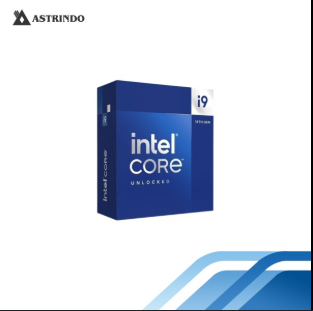

.:: Welcome To Our Store ::.

Intel Core i9-14900K
Rp 8.750.000
Deskripsi
- Model Name : BX8071514900K
- CPU Model : Intel i9-14900K Processor
- CPU Collection : 14th Generation
CPU Series : Intel Core i9 Processors
CPU Socket : LGA1700
CPU Cores : 24 Cores
CPU Threads : 32 Threads
CPU Base Clock : 3.2 GHz
CPU Boost Clock (Max.) : 5.6 GHz
CPU Cache : 36 MB Intel Smart Cache
L2 Cache : 32 MB
Processor Base Power : 125 W
Maximum Turbo Power : 253 W
Processor Graphics : Intel UHD Graphics 770
Copyright & copy; 2020 by YK-IF1